WHAT IS COFFEE?
Coffee is a beverage made from roasted coffee beans, thats know for its stimulating effect due to the
caffeine it contains.
Coffee Beans
Coffee beans are the seeds of the Coffea plant's fruit, more commonly known as coffee cherries.
They are found inside coffee cherries that ripen from green to red/purple and are harvested at peak ripeness
for optimal quality. Each cherry usually holds two flat beans.
After processing, these become green coffee beans made of carbohydrates, lipids, proteins, and caffeine.
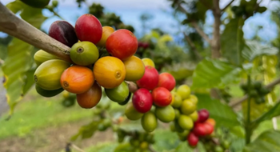
Different types of coffee beans
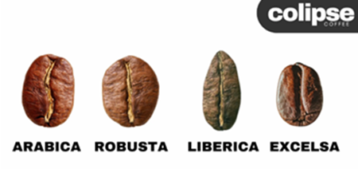
Different types of coffee beans come in various sizes, are grown in various countries
under different conditions, and are used for different types of coffee drinks.
The choice of coffee bean type and roast level, combined with the brewing method,
significantly impacts the final flavor.
There are 4 main types of coffee beans: Arabica, Robusta, Liberica, and Excelsa.
Arabica coffee beans originated in South Ethiopia's forests and spread globally by the mid-1700s.
Arabica is the most popular type of coffee, due to its sweeter, more complex flavor that you can drink straight.
Arabica coffee is known for its natural sweetness, fruity flavors like berries, and subtle floral notes.
It often has higher acidity, described as bright, tangy, or wine-like.
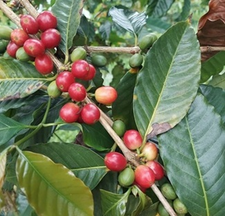
Robusta coffee beans are the seeds of the Coffea canephora plant, native to Central and Western Africa.
It is widely cultivated in equatorial East Africa and Southeast Asia, with Vietnam, Brazil, and Indonesia as
leading producers. While Arabica is the most popular, Robusta is a cheaper and stronger type of coffee bean.
Robusta coffee is known for its strong, earthy flavor profile, often described as bold and bitter with notes of
dark chocolate, nuts, and a slight graininess. Its body is fuller and more intense than Arabica, with a heavier,
lingering aftertaste. Because of its bitter flavor, it is typically used for espresso drinks and in instant
coffee mixes.
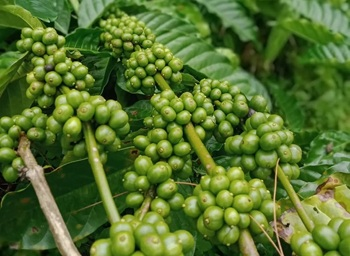
Liberica coffee beans are the seeds of the Coffea liberica plant, indigenous to the tropical forests of West and
Central Africa. Today, Liberica constitutes less than 1% of global coffee production, with key cultivation areas
in Malaysia, the Philippines, and some parts of Africa, including Uganda and Sierra Leone.
Liberica coffee beans offer a bold, earthy flavor with smoky and woody notes, complemented by hints of dark
fruit and floral undertones. Its low acidity and high body give it a rich, full mouthfeel, unlike the lighter,
fruitier profile of Arabica.
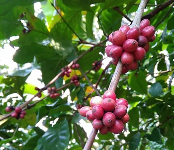
Originating in Central and West Africa, Excelsa coffee was later introduced to Southeast Asia, where it gained
popularity due to its resilience in tropical climates. Key cultivation areas include Southeast Asian countries
like the
Philippines, Malaysia, and parts of Africa. Excelsa coffee beans are known for their bold and complex flavors,
often described as earthy, smoky, and fruity, with hints of dark berries, jackfruit, and floral undertones.
It has a full-bodied mouthfeel with low acidity, making it smoother and less tangy than Arabica.
Roasting brings out rich, roasted nut and chocolate notes along with a subtle sweetness.
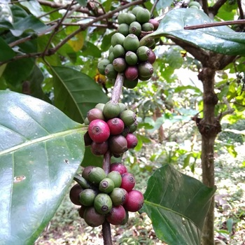
HISTORY OF COFFEE
Discovery
According to legend, a goat herder named Kaldi was the first person who discovered coffee
beans and their benefits. Kaldi noticed that after his goats ate the cherries
of a particular tree in the ancient coffee forests of the Ethiopian plateau,
they were so full of energy that they didn’t want to sleep at night. Curious,
he tried them himself and felt more alert.
Kaldi reported his findings to the abbot of the local monastery,
who struggled to stay awake during the long hours of evening prayer.
The abbot made a drink with the cherries and found that it kept him alert. It helped them stay
awake during long hours of evening prayer.
Coffee Houses
Public coffee houses started popping up in cities across the region now referred to as the Middle
East. People visited these coffee houses to sip coffee and chat,
listen to music, watch performances, and stay up to current news.
Coffee houses were established in Western Europe by the late 17th century, especially in Holland,
England, and Germany.
Origin
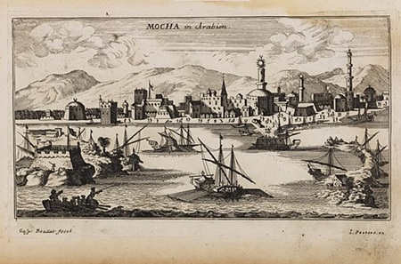
By the 15th century, coffee was being grown in what is now Yemen,
and by the 16th century it gained popularity in what we now know as Iran, Egypt, Syria, and Turkey.
Coffee was first introduced to Europe in Hungary when the Turks invaded Hungary at the Battle of
Mohács in 1526.
Within a year, coffee had reached Vienna by the same Turks who fought the Europeans at the Siege of
Vienna.
Coffee arrived in Italy in the second half of the 16th century through commercial Mediterranean
trade routes, while Central and Eastern Europeans learned of coffee from the Ottomans.
In the 1600s, the Dutch managed to smuggle live plants out and began cultivating coffee in their colony of Java (Indonesia).
French colonists took coffee to the Caribbean, Portuguese and Spanish took it to Brazil and Central America.
By the mid 17th century, it had reached India and the East Indies.
Coffee plantations flourished in the tropical climate, and by the 19th century, Brazil had become the world’s largest
coffee producer, a title it still holds.
TYPES OF COFFEE
Now that you learnt about the different types of coffeebeans, lets learn about the different methods of preparing
coffee and how the types of coffeebean plays a crucial part.
Coffee bean types differ based on roasting through the development of varying flavor profiles, acidity levels, body characteristics,
and aroma complexities.
Coffee roasting is the process of heating green coffee beans to unlock and enhance these inherent qualities.
The main types of coffee bean roasts—Light, Medium, Medium-Dark, and Dark—offer distinct flavors and caffeine levels.
Light roasts retain more caffeine and acidity, creating a mild flavor.
Medium roasts balance acidity and sweetness. Medium-Dark roasts add caramelized richness, while Dark roasts provide bold, smoky flavors
with reduced acidity. This roasting spectrum creates varied taste experiences in coffee bean selection.
Choose coffee bean types based on the brewing method, by considering the method's unique traits.
For espresso, which uses high pressure and a short extraction time, use a dark roast with a fine grind for a
strong, concentrated flavor.
For French press and cold brewing, where the coffee steeps for longer, use a medium-to-coarse grind with medium or
dark roasts to avoid over-extraction and bitterness.
For drip coffee, a medium roast with a medium grind provides a balanced flavor extraction for this popular method.
Brewing styles
Different brewing styles brews different flavors and strengths of the coffee. Here are a few:
Ground coffee is added to a brew basket and placed in an automatic coffee machine for Drip Brew
brewing style. Gravity is used to pass water through the grounds, resulting in a traditional cup of coffee.
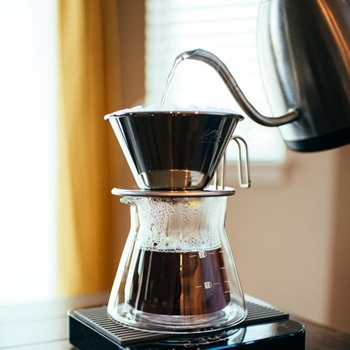
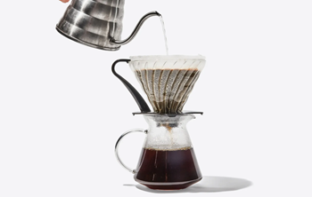
Pour Over brewing is achieved by pouring boiling water slowly through coffee grounds as they
sit in a filter basket. The coffee then drips into a single cup, resulting in a potent brew.
For cold brew, coarsely ground coffee is placed in room temperature water and allowed to
steep for an extended period of time. This results in a less bitter, highly caffeinated brew.
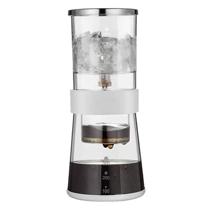
To achieve an espresso brew, you'll need an espresso or cappuccino machine. They pass pressurized hot water through
a filter containing dark roasted finely ground coffee beans. The force of the water produces a highly
concentrated shot of coffee. Its most commonly used for the base of coffee drinks.
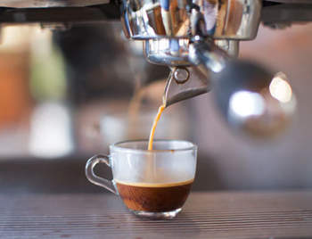
Ristretto is brewed in a similar method to the espresso, pressurized water is passed through the coffee grounds.
However, you would use half the amount of water compared to espresso. The shorter brewing cycle creates a more
concentrated and darker shot of espresso.
Coffee Drinks
There are many different types of hot coffee drinks, here are a few popular ones:
-
The espresso, also known as a short black, is approximately 1 oz (29.5ml)
of highly concentrated coffee. An espresso shot can be served solo or used
as the foundation of most coffee drinks, like lattes and macchiatos.
-
With a similar flavor to black coffee, the americano consists of an espresso
shot diluted in hot water. The water dilutes the espresso while still maintaining
a high level of caffeine.
-
The long black is a similar coffee drink to the americano, but it is made by pouring
a double shot of espresso over hot water. The technique of adding hot water first helps
preserve the crema, which is the layer of foam on top of the espresso, giving it a distinct taste.
-
The macchiato is another espresso-based drink that has a small amount of foam left on the surface
of the espresso as the steamed milk is dashed into the drink. Flavoring syrups are often added to based on preference.
-
Cappuccino is a latte made with more foam than steamed milk, often with a sprinkle of cocoa powder or cinnamon on top.
It is usually associated with indulgence and comfort because of its thick foam layer. Sometimes you can find variations
that use cream instead of milk or with additional flavorings added.
-
Flat White is very similar to a cappuccino but lacks the foam layer and chocolate powder. To keep the drink creamy rather
than frothy, steamed milk from the bottom of the jug is used instead of from the top.
-
Cafe Latte is the most popular coffee drink out there, is comprised of a shot of espresso and steamed milk with just a touch of foam.
It can be ordered plain or with a flavor shot of anything from vanilla to pumpkin spice.
-
The mocha is considered a coffee and hot chocolate hybrid. The chocolate powder or syrup gives it a rich and creamy flavor and cuts the
acidity of the espresso. Classic mochas use cocoa powder, but you can use white chocolate syrup to make a white chocolate mocha.
-
Iced Coffee is a coffee with ice, typically served with a dash of milk, cream or sweetener. It is very popular in the summertime,
and different flavouring syrups are often added. It can also be topped off with some cold foam.